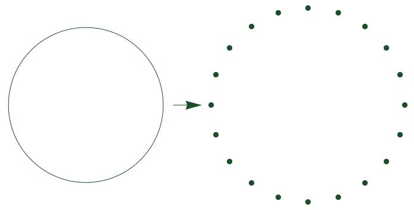

class: center, middle, titlepage count: false # Morse theory for Wasserstein Spaces ## JMM 2020 ### Joshua Mirth – Colorado State University --- <!-- # Outline .bigger[ I. What is optical flow? II. The Dataset III. Topological Data Analysis IV. Results ] --> # Motivation Persistent homology takes as input a filtered sequence of spaces, `$$ X_0 \subseteq X_1 \subseteq X_2 \subseteq \cdots \subseteq X_n, $$` typically constructed with either sublevel sets or simplicial complexes. -- **Definition:** The Vietoris–Rips simplicial complex on a metric space `\(X\)` at scale parameter `\(r\)` contains a `\(k\)`-simplex `\(\sigma = [x_0 , \ldots , x_k]\)` for every set of `\(k+1\)` points `\(\{ x_0 , \ldots , x_k\}\)` in `\(X\)` with $$ \max_{i,j\in[0,\ldots,k]} d(x_i,x_j) \le r . $$ -- Any sequence `\(r_0 \lt r_1 \lt \cdots \lt r_n\)` gives a sequence $$ \mathrm{VR}(X;r_0) \subseteq \mathrm{VR}(X;r_1) \subseteq \cdots \subseteq \mathrm{VR}(X;r_n). $$ --- A space `\(X \subset \mathbb{R}^2\)` and its Vietoris–Rips filtration: .center[<img src="vr_random_circle_data_table_horz.png" width=100% height=100% />] Intuitively, `\(\mathrm{VR}(X;r)\)` thickens the space `\(X\)`. -- **Warning:** This is not a rigorous statement! --- **Definition:** A metric thickening of a space `\((X,d_X)\)` is a metric space `\((Z,d_Z)\)` and a map `\(\iota \colon X \to Z \)` such that `\(\iota\)` is an isometry onto its image. There is a canonical inclusion `\(\iota \colon X \hookrightarrow \mathrm{VR}(X;r)\)` given by `\(x \mapsto [x]\)`. However, `\(\iota\)` is not even continuous when `\(X\)` is not discrete. (The vertex set of a simplicial complex has the discrete topology!) -- **Example:** If `\(X = \mathbb{S}^1\)`, then `\(\mathrm{VR}(X;0)\)` is an uncountable set of discrete points. .center[ `\(\mathbb{S}^1\)` and `\(\mathrm{VR}(\mathbb{S}^1;0)\)` (imagine uncountably many points on the right!)] --- # Vietoris–Rips Thickenings Reinterpret simplices as discrete _probability measures_ on `\(X\)`. * In any simplicial complex, a point in a simplex is given by barycentric coordinates: if `\(\sigma = [x_0 , \ldots , x_k]\)`, then any `\(x \in \sigma\)` is given by `$$ x = \sum_{i=0}^{k} \lambda_{i} x_{i}. $$` where `\(\sum \lambda_{i} = 1 \)`. * Points can therefore be interpreted as probability measures: `$$ \displaystyle \sum_{i=0}^{k} \lambda_{i} x_{i} \iff \sum_{i=0}^{k} \lambda_{i} \delta[x_{i}] $$` where `\(\delta[x_{i}]\)` is the Dirac measure at `\(x_{i}\)`. * The Vietoris–Rips metric thickening, `\(\mathcal{VR}(X;r)\)`, consists of measures corresponding to simplices in `\(\mathrm{VR}(X;r)\)`. --- # The Wasserstein Distance .figuresplit[<img src="wasserstein_eg.png" width=90% height=90% />] .textsplit[`\(\mathcal{VR}(X;r)\)` lives in the space `\(\mathcal{P}(X)\)` of all probability measures on `\(X\)`. This space can be given a topology by the Wasserstein distance: `$$ \displaystyle W_2(\mu,\nu)^2 = \inf_{\gamma} \int_{X \times X} d^2(x,y) d\gamma $$` where the infimum is taken over all measures `\(\gamma\)` whose marginals are `\(\mu\)` and `\(\nu\)`. ] -- .textsplit[With this metric, `\(W_2(\delta[x_0],\delta[x_1]) = d(x_0,x_1)\)`, so the inclusion `\(\iota \colon X \to \mathcal{VR}(X;r) \)` is continuous. **Question:** what is the homotopy type of `\(\mathcal{VR}(X;r)\)`, and how does it evolve as `\(r\)` increases? ] --- # Hausmann-Style Theorems **Theorem:** [Hausmann] For a Riemannian manifold `\(M\)`, and sufficiently small `\(r \gt 0\)`, there is a homotopy equivalence between the Vietoris–Rips simplicial complex and the manifold, `\(\mathrm{VR}(M;r) \simeq M\)`. **Theorem:** For a Riemannian manifold `\(M\)` [Adamaszek, Adams, Frick] or a smooth manifold `\(M \subseteq \mathbb{R}^n\)` with the Euclidean distance [Adams, M.] and small `\(r\)` there is a homotopy equivalence `\(\mathcal{VR}(M;r) \simeq M\)`. <!-- There are many proofs of (some form of) these theorems! * For spheres: [Adamaszek, Adams] [Zaremsky] * For Riemannian manifolds [Hausmann] [Latschev] [Adamaszek, Adams, Frick] * For Euclidean submanifolds [Niyogi, Smale, Weinberger] [Adams, M.] --> -- .textsplitR[_Proof Sketch:_ Let `\(\iota\)` be the canonical inclusion of `\(M\)` into `\(\mathcal{VR}(M;r)\)`. If `\(r\)` is sufficiently small, the Fréchet mean $$ F(\mu) := \mathrm{argmin}_{p \in M} \int_M d^2(x,p) d\mu(x) $$ is well-defined and continuous as a function `\(\mathcal{P}(M) \to M\)`. Then `\(F \circ \iota = \mathrm{id}\)` and `\(\iota \circ F \simeq \mathrm{id}\)` by the homotopy shown at right:] .figuresplitR[<img src="homotopy2.gif" width=80% height=80% /> .source[Path between `\(\mu\)` (in gold) and its Fréchet mean (in black).]] --- ## Corollaries: **Corollary 1:** The `\(k\)`-skeleton of `\(\mathcal{VR}(M;r)\)` is homotopy equivalent to `\(M\)` for sufficiently small `\(r\)`. **Corollary 2:** The set of all measures with support bounded in diameter by `\(r\)` is homotopy equivalent to `\(M\)` for sufficiently small `\(r\)`. .center[(These require the preceding proof.)] -- For larger `\(r\)`, neither `\(\mathrm{VR}(M;r)\)` nor `\(\mathcal{VR}(M;r)\)` is homotopy equivalent to `\(M\)`! -- **Example:** [Adamaszek, Adams, Frick] For `\(M = \mathbb{S}^1\)` and `\(r = 2\pi/3 \)`, `\(\mathrm{VR}(M;r) \simeq \mathcal{VR}(M;r) \simeq \mathbb{S}^3\)`. .fiftyfiftyleft[ `\(\mathcal{VR}(\mathbb{S}^1;r)\)` for `\(r\)` sufficiently small.] .fiftyfiftyright[<img src="r_critical.png" width=30% height=30% /> `\(\mathcal{VR}(\mathbb{S}^1;r)\)` for `\(r\)` too big.] At `\(r = 2\pi/3 \)`, there are measures in `\(\mathcal{VR}(M;r)\)` which do not have a unique Fréchet mean. --- # Questions: 1. What is the homotopy type of `\(\mathcal{VR}(\mathbb{S}^1;r)\)` when `\(r \gt \frac{2\pi}{3}\)`? 2. More generally, how does the homotopy type of `\(\mathcal{VR}(M;r)\)` evolve as `\(r\)` increases when `\(M\)` is a manifold? -- ### Motivation: .center[<img src="circle_R4_barcodes.png" width=90% height=90% /> Persistence barcodes (computed in Ripser) for data from a circle.] --- class: middle, center, titlepage count: false # Morse Theory and Wasserstein Spaces --- ## Recall: Morse Lemmas Let `\(f\)` be a smooth, real-valued function on a manifold `\(M\)`. **Lemma A:** If `\([a,b]\)` contains no critical values of `\(f\)` and `\(f^{-1}([a,b])\)` is compact, then the sublevel sets `\(f^{-1}(-\infty,a]\)` and `\(f^{-1}(-\infty,b]\)` are homotopy equivalent. _Proof Sketch:_ Flow from `\(f^{-1}(-\infty,b]\)` to `\(f^{-1}(-\infty,a]\)` along the gradient of `\(f\)`. **Lemma B:** If `\(f\)` is a Morse function and `\([a,b]\)` contains exactly one critical value, `\(c\)`, of `\(f\)`, then `\(M^b \simeq M^a \cup D^k\)` where `\(k\)` is the index of `\(f^{-1}(c)\)`. -- .center[<img src="milnor_torus.gif" width=30% height=30% />] --- ## Morse Lemmas in Wasserstein Space **Energy Function:** The Fréchet variance of a measure `\(\mu\)` with Fréchet mean is $$ V(\mu) := \int_{M \times M} d^2(x,y) d(\mu \times \mu)(x,y). $$ If the (geometric) Fréchet mean `\(\bar{\mu}\)` exists, then `\(V(\mu) = \int_M d^2(x,\bar{\mu}) d\mu(x) \)`. -- **Big Picture:** The homotopy in the preceding proof is a flow along `\(-\nabla V\)`. Moreover, Fréchet variance serves as a type of Morse function on `\(\mathcal{VR}(M;r)\)`, and flowing along the vector field `\(-\nabla V\)` gives a version of Morse Lemma A. .center[<img src="homotopy2.gif" width=20% height=20% />] -- ... What do "gradient," "flow," and "vector field" actually mean in `\(\mathcal{VR}(M;r)\)` (or `\(\mathcal{P}(M)\)`)? --- ## "Weak" Riemannian Structure of `\(\mathcal{P}(M)\)` There is a differentiable structure on `\(\mathcal{P}(M)\)`, the space of probability measures on `\(M\)` with the `\(W_2\)` metric: * The tangent space at `\(\mu \in \mathcal{P}(M)\)` consists of vector fields on the support of `\(\mu\)`. * If `\(\mu\)` has finite support (e.g. `\(\mu \in \mathcal{VR}(M;r) \)`) flowing along a vector field consists of solving a (time-dependent) system of ODEs on `\(M\)`. * For `\(-\nabla V\)`, the ODE at any point in `\(\mathrm{supp}(\mu)\)` is simply $$ \dot{x}(t) = \exp^{-1}_x(\bar{\mu}) $$ as long as a unique `\(\bar{\mu}\)` exists. The solutions are the curves pictured previously. -- * If `\(\bar{\mu}\)` is not a unique point in `\(M\)`, then the ODEs are tricky! Morally `\(\mu\)` lives on a "stable manifold" of a "saddle point". * **Future Work:** Understand these systems, at least on example manifolds where these equations are tractable (spheres, Grassmannians, Lie groups?). <!-- * There is a tangent space, and for "nice" real-valued functions `\(F\)` on `\(\mathcal{P}(M)\)` there is a gradient, defined by `$$ \lim_{\nu \to \mu} \frac{F(\nu) - F(\mu) - \int_{M \times M} \langle \nabla F , y - x \rangle d\gamma(x,y)}{W_2(\mu,\nu)} = 0 . $$` * The continuity equation $$ \frac{\partial \mu}{\partial t} + \mathrm{div}_\mu(v_t) = 0 $$ defines the flow of a vector field `\(v_t\)`. * **Theorem:** [Ambrosio, Gigli, Savaré] Every reasonably smooth curve in `\(\mathcal{P}(M)\)` has an associated velocity vector field. * Differential forms and De Rahm cohomology are defined [Gangbo, Kim, Pacini]. Long term goal: understand the homotopy type of `\(\mathcal{P}(M)\)` and "nice" subspaces using Morse theory. --> --- class: middle, left, titlepage count: false # Thank you! * Slides available at https://www.math.colostate.edu/~mirth/talks.html or email me at <a href="mirth@math.colostate.edu">mirth@math.colostate.edu</a>. ### References: .refs[* Michal Adamaszek and Henry Adams. The Vietoris–Rips complexes of a circle. _Pacific Journal of Mathematics, 290(1):1-40, 2018. * Michal Adamaszek, Henry Adams, Florian and Frick. Metric reconstruction via optimal transport. _SIAM Journal on Applied Algebra and Geometry_, 2(4):597-619, 2018. * Henry Adams and Joshua Mirth. Metric thickenings of Euclidean submanifolds. _Topology and its Applications_, 254:69-84, 2019. * Jean-Claude Hausmann. On the Vietoris–Rips complexes and a cohomology theory for metric spaces. _Annals of Mathematics Studies, 138:175-188, 1995. * Luigi Ambrosio, Nicola Gigli, and Giuseppe Savaré. _Gradient flows: in metric spaces and in the space of probability measures_. Springer Science and Business Media, 2008. * Wilfrid Gangbo, Hwa Kil Kim, and Tommaso Pacini. _Differential forms on wasserstein space and infinite-dimensional Hamiltonian systems_. American Mathematical Society, 2010. * Janko Latschev. Vietoris-Rips complexes of metric spaces near a closed Riemannian manifold. _Archiv der Mathematik_, 77(6):522-528, 2001. * John Milnor. _Morse Theory_. Annals of Mathematics Studies. Princeton University Press, 1969. * Partha Niyogi, Stephen Smale, and Shmuel Weinberger. Finding the homology of submanifolds with high confidence from random samples. _Discrete and Computational Geometry_, 39(1-3):419-441, 2008. * Céderic Villani. _Optimal transport: old and new_, volume 338, Springer Science and Business Media, 2008. * Matthew Zaremsky. Bestvina-Brady discrete Morse theory and Vietoris–Rips complexes. _arXiv preprint arXiv:1812.10976_, 2018. ]